肺野セグメンテーション¶
前準備¶
主要パッケージのインポート¶
[1]:
import pathlib
import matplotlib.pyplot as plt
import numpy as np
import pandas as pd
from PIL import Image
from IPython.display import display
from logging import basicConfig, getLogger, INFO
basicConfig(level=INFO, format='%(asctime)s %(levelname)s :%(message)s')
logger = getLogger(__name__)
データディレクトリの指定¶
[2]:
DATA_ROOT = pathlib.Path('Data/Images/chest_xray')
IMAGE_DIR = 'regular'
LABEL_DIR = 'lung'
CLASS_LABELS = ('lung')
IMAGE_EXT = '.png'
画像ファイルを基にpd.DataFrameを作成する¶
[3]:
def create_dataset_df(data_root, image_dir, label_dir, image_ext):
dfs = []
root = pathlib.Path(data_root)
image_filenames = (root / pathlib.Path(image_dir)).glob('*' + image_ext)
df = pd.DataFrame(image_filenames, columns=['image_path'])
df['label_path'] = df['image_path'].map(
lambda p: root / pathlib.Path(label_dir) / p.name)
return df
df_dataset = create_dataset_df(DATA_ROOT, IMAGE_DIR, LABEL_DIR, IMAGE_EXT)
display(df_dataset)
| image_path | label_path | |
|---|---|---|
| 0 | Data\Images\chest_xray\regular\000.png | Data\Images\chest_xray\lung\000.png |
| 1 | Data\Images\chest_xray\regular\001.png | Data\Images\chest_xray\lung\001.png |
| 2 | Data\Images\chest_xray\regular\002.png | Data\Images\chest_xray\lung\002.png |
| 3 | Data\Images\chest_xray\regular\003.png | Data\Images\chest_xray\lung\003.png |
| 4 | Data\Images\chest_xray\regular\004.png | Data\Images\chest_xray\lung\004.png |
| ... | ... | ... |
| 280 | Data\Images\chest_xray\regular\280.png | Data\Images\chest_xray\lung\280.png |
| 281 | Data\Images\chest_xray\regular\281.png | Data\Images\chest_xray\lung\281.png |
| 282 | Data\Images\chest_xray\regular\282.png | Data\Images\chest_xray\lung\282.png |
| 283 | Data\Images\chest_xray\regular\283.png | Data\Images\chest_xray\lung\283.png |
| 284 | Data\Images\chest_xray\regular\284.png | Data\Images\chest_xray\lung\284.png |
285 rows × 2 columns
画像を表示¶
入力画像を背景にセグメンテーションを重畳表示する
[4]:
OVERLAY_ALPHA = 0.5
cmap = np.array([[0, 0, 0, 0], [255, 0, 0,
255 * OVERLAY_ALPHA]]).astype(np.uint8)
N_SAMPLES = 5
plt.figure(figsize=(10, 5))
for i, sample in enumerate(df_dataset.sample(n=N_SAMPLES).itertuples()):
image = Image.open(sample.image_path).convert('RGBA')
label = np.array(Image.open(sample.label_path).convert('L'))
label = (label > 0).astype(np.uint8)
label = Image.fromarray(cmap[label])
plt.subplot(1, N_SAMPLES, i + 1)
plt.imshow(Image.alpha_composite(image, label))
plt.axis('off')
plt.tight_layout()
plt.show()

Data augmentation¶
回転、左右反転等をランダムに適用する。
[5]:
import tqdm
IMG_SHAPE = (3, 256, 256)
def load_img(filepath):
img = Image.open(filepath)
img = img.resize(IMG_SHAPE[1:])
return np.atleast_3d(img)
def load_img2img_dataset(df, load_img):
data = np.stack(
[load_img(filepath) for filepath in tqdm.tqdm(df['image_path'])])
labels = np.stack([
load_img(filepath)[..., :1] for filepath in tqdm.tqdm(df['label_path'])
])
return data, labels
[6]:
import albumentations as A
from tut_utils import AugmentedDataset
from torch.utils.data import DataLoader
album_transform = A.Compose([
A.HorizontalFlip(p=.25),
A.ShiftScaleRotate(shift_limit=0, scale_limit=.1, rotate_limit=5, p=.8)
])
def random_transform(x, y):
x = (x / 255).astype(np.float32)
y = (y / 255).astype(np.float32)
tfed = album_transform(image=x, mask=y)
x, y = tfed['image'], tfed['mask']
x, y = x.transpose(2, 0, 1), y.transpose(2, 0, 1) # to channels first
return x.astype(np.float32), y.astype(np.float32)
N_TEST = 3
def test_augmentation(df_dataset):
df_train = df_dataset.iloc[:N_TEST]
train_data, train_labels = load_img2img_dataset(df_train, load_img)
dataset = AugmentedDataset(train_data, train_labels, random_transform)
loader = DataLoader(dataset, batch_size=1, shuffle=False, num_workers=0)
for i, data in enumerate(loader):
plt.figure(figsize=(4, 1.5))
plt.subplot(1, 2, 1)
plt.imshow(data[0].squeeze().numpy(), cmap='gray')
plt.title('input image')
plt.axis('off')
plt.subplot(1, 2, 2)
plt.imshow(data[1].squeeze().numpy(), cmap='gray')
plt.title('label image')
plt.axis('off')
plt.show()
test_augmentation(df_dataset)
100%|██████████| 3/3 [00:00<00:00, 214.50it/s]
100%|██████████| 3/3 [00:00<00:00, 500.57it/s]
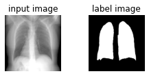
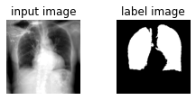
ホールドアウト¶
学習に時間がかかるため、今回は交差検証は行わない。
[7]:
from sklearn.model_selection import KFold
N_SPLITS = 5
kfold = KFold(n_splits=N_SPLITS, shuffle=True)
train_index, test_index = next(kfold.split(df_dataset['image_path']))
df_train = df_dataset.iloc[train_index]
df_test = df_dataset.iloc[test_index]
print('training:', len(df_train), 'test:', len(df_test))
training: 228 test: 57
モデル作成¶
[8]:
IN_CHS = 1
OUT_CHS = 1
UNET_DEPTH = 4
import torch
import torch.nn as nn
class ConvBNReLU(nn.Module):
def __init__(self, in_chs, out_chs, kernel_size, padding):
super().__init__()
self.block = nn.Sequential(
nn.Conv2d(in_chs,
out_chs,
kernel_size=kernel_size,
padding=padding), nn.BatchNorm2d(out_chs),
nn.ReLU(inplace=True))
def forward(self, x):
return self.block(x)
class Encoder(nn.Module):
def __init__(self, in_chs: int, mid_chs: int, out_chs: int,
kernel_size: int, padding: int):
super().__init__()
self.out_chs = out_chs
self.block = nn.Sequential(
ConvBNReLU(in_chs, mid_chs, kernel_size, padding),
ConvBNReLU(mid_chs, out_chs, kernel_size, padding),
)
def forward(self, x):
return self.block(x)
class Decoder(nn.Module):
def __init__(self,
in_chs,
out_chs,
kernel_size,
padding,
scale_factor: int,
apply_dropout=False):
super().__init__()
self.out_chs = out_chs
mid_chs = (in_chs + out_chs) // 2
self.up = nn.Upsample(scale_factor=scale_factor,
mode='bilinear',
align_corners=True)
self.block = nn.Sequential(
ConvBNReLU(in_chs, mid_chs, kernel_size, padding),
ConvBNReLU(mid_chs, out_chs, kernel_size, padding),
)
if apply_dropout:
self.dropout = nn.Dropout(.25)
else:
self.dropout = None
def forward(self, x1, x2):
cat = torch.cat([self.up(x1), x2], dim=1)
x = self.block(cat)
if self.dropout:
x = self.dropout(x)
return x
class UNet(nn.Module):
def __init__(self,
in_chs,
out_chs,
depth,
ini_chs=8,
kernel_size=3,
padding=1,
scale_factor=2):
'''
Args:
depth (int): UNets depth i.e # of downsampling layers
'''
super().__init__()
self.depth = depth
self.encs = nn.ModuleList()
self.decs = nn.ModuleList()
self.pools = nn.ModuleList()
chs = ini_chs
for i in range(depth):
enc = Encoder(in_chs if i == 0 else chs, chs, chs * 2, kernel_size,
padding)
self.encs.append(enc)
chs = chs * 2
if i < (depth - 1):
self.pools.append(nn.MaxPool2d(scale_factor))
for i in range(depth - 1):
enc_below = self.encs[-i - 1]
enc_left = self.encs[-i - 2]
dec = Decoder(enc_left.out_chs + enc_below.out_chs,
enc_left.out_chs,
kernel_size,
padding,
scale_factor,
apply_dropout=i < depth // 2)
self.decs.append(dec)
self.output_layer = nn.Conv2d(self.decs[-1].out_chs,
out_chs,
kernel_size=1,
padding=0)
def forward(self, x):
skips = []
for i in range(self.depth):
x = self.encs[i](x)
if i < (self.depth - 1):
skips.append(x)
x = self.pools[i](x)
for i in range(self.depth - 1):
x = self.decs[i](x, skips[-(i + 1)])
return self.output_layer(x)
from torchsummary import summary
summary(UNet(IN_CHS, OUT_CHS, UNET_DEPTH), (1, 512, 512),
verbose=0,
device='cpu')
[8]:
==========================================================================================
Layer (type:depth-idx) Output Shape Param #
==========================================================================================
├─ModuleList: 1 [] --
| └─Encoder: 2-1 [-1, 16, 512, 512] --
| | └─Sequential: 3-1 [-1, 16, 512, 512] 1,296
├─ModuleList: 1 [] --
| └─MaxPool2d: 2-2 [-1, 16, 256, 256] --
├─ModuleList: 1 [] --
| └─Encoder: 2-3 [-1, 32, 256, 256] --
| | └─Sequential: 3-2 [-1, 32, 256, 256] 7,056
├─ModuleList: 1 [] --
| └─MaxPool2d: 2-4 [-1, 32, 128, 128] --
├─ModuleList: 1 [] --
| └─Encoder: 2-5 [-1, 64, 128, 128] --
| | └─Sequential: 3-3 [-1, 64, 128, 128] 27,936
├─ModuleList: 1 [] --
| └─MaxPool2d: 2-6 [-1, 64, 64, 64] --
├─ModuleList: 1 [] --
| └─Encoder: 2-7 [-1, 128, 64, 64] --
| | └─Sequential: 3-4 [-1, 128, 64, 64] 111,168
├─ModuleList: 1 [] --
| └─Decoder: 2-8 [-1, 64, 128, 128] --
| | └─Upsample: 3-5 [-1, 128, 128, 128] --
| | └─Sequential: 3-6 [-1, 64, 128, 128] 295,488
| | └─Dropout: 3-7 [-1, 64, 128, 128] --
| └─Decoder: 2-9 [-1, 32, 256, 256] --
| | └─Upsample: 3-8 [-1, 64, 256, 256] --
| | └─Sequential: 3-9 [-1, 32, 256, 256] 74,016
| | └─Dropout: 3-10 [-1, 32, 256, 256] --
| └─Decoder: 2-10 [-1, 16, 512, 512] --
| | └─Upsample: 3-11 [-1, 32, 512, 512] --
| | └─Sequential: 3-12 [-1, 16, 512, 512] 18,576
├─Conv2d: 1-1 [-1, 1, 512, 512] 17
==========================================================================================
Total params: 535,553
Trainable params: 535,553
Non-trainable params: 0
Total mult-adds (M): 5.80
==========================================================================================
Input size (MB): 1.00
Forward/backward pass size (MB): 2.00
Params size (MB): 2.04
Estimated Total Size (MB): 5.04
==========================================================================================
ネットワーク構造の可視化¶
スキップコネクションを確認する。
[9]:
import torchviz
dummy_x = torch.zeros((1, 1, 512, 512), dtype=torch.float, requires_grad=False)
dummy_y = UNet(IN_CHS, OUT_CHS, UNET_DEPTH)(dummy_x)
dot = torchviz.make_dot(dummy_y)
dot.format = 'svg'
dot
[9]:
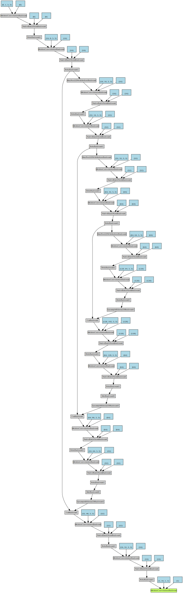
データの読み込み¶
学習¶
pytorch-lightining¶
[10]:
import torch.optim as optim
import torch.nn.functional as F
import pytorch_lightning as pl
import os
NUM_WORKERS = 0 if os.name == 'nt' else 2
BATCH_SIZE = 8
class LitUNet(pl.LightningModule):
def __init__(self, in_chs, out_chs, depth):
super().__init__()
self.model = UNet(in_chs, out_chs, depth)
def forward(self, x):
return self.model(x)
def training_step(self, batch, batch_idx):
x, y = batch
y_hat = self.model(x)
loss = F.binary_cross_entropy_with_logits(y_hat, y)
self.log('train_loss', loss)
return loss
def configure_optimizers(self):
optimizer = torch.optim.Adam(self.parameters(), lr=1e-3)
return optimizer
[11]:
from pytorch_lightning.callbacks import EarlyStopping
from pytorch_lightning.loggers import CSVLogger
EPOCHS = 32
PATIENCE = 4
BATCH_SIZE = 4
model = LitUNet(IN_CHS, OUT_CHS, UNET_DEPTH)
train_data, train_labels = load_img2img_dataset(df_train, load_img)
dataset = AugmentedDataset(train_data, train_labels, random_transform)
trainloader = torch.utils.data.DataLoader(dataset,
batch_size=BATCH_SIZE,
shuffle=True,
num_workers=NUM_WORKERS)
early_stop_callback = EarlyStopping(monitor='train_loss',
patience=PATIENCE,
verbose=False,
mode='min')
csv_logger = CSVLogger('train_logs', name='lung_segmentation')
trainer = pl.Trainer(gpus=1 if torch.cuda.is_available() else 0,
max_epochs=EPOCHS,
logger=csv_logger,
log_every_n_steps=len(trainloader),
callbacks=[early_stop_callback])
trainer.fit(model, trainloader)
logger.info('Finish training')
df_logs = pd.read_csv(csv_logger.experiment.metrics_file_path)
df_logs.plot(y='train_loss')
plt.show()
100%|██████████| 228/228 [00:01<00:00, 214.87it/s]
100%|██████████| 228/228 [00:00<00:00, 531.95it/s]
GPU available: True, used: True
2020-12-25 04:58:32,894 INFO :GPU available: True, used: True
TPU available: None, using: 0 TPU cores
2020-12-25 04:58:32,896 INFO :TPU available: None, using: 0 TPU cores
LOCAL_RANK: 0 - CUDA_VISIBLE_DEVICES: [0]
2020-12-25 04:58:32,896 INFO :LOCAL_RANK: 0 - CUDA_VISIBLE_DEVICES: [0]
| Name | Type | Params
-------------------------------
0 | model | UNet | 535 K
-------------------------------
535 K Trainable params
0 Non-trainable params
535 K Total params
2020-12-25 04:58:34,081 INFO :
| Name | Type | Params
-------------------------------
0 | model | UNet | 535 K
-------------------------------
535 K Trainable params
0 Non-trainable params
535 K Total params
2020-12-25 04:59:14,108 INFO :Finish training
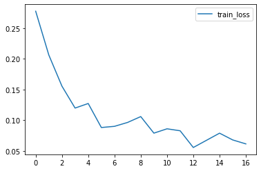
評価¶
Dice similarity coefficient(F1 score)とJaccard Index(IoU)を評価指標とする。
[12]:
import math
from sklearn import metrics
label_cmap = np.array([[0, 0, 0], [255, 0, 0], [0, 255, 0], [255, 255, 0]])
test_data, test_labels = load_img2img_dataset(df_test, load_img)
test_data = (test_data / 255).astype(np.float32)
test_labels = (test_labels > 0).astype(np.uint8)
model.eval()
model.freeze()
scores = []
for i, (data, label) in enumerate(zip(test_data, test_labels)):
data = data.transpose((2, 0, 1))[np.newaxis]
label = label.astype(np.uint8).squeeze()
with torch.no_grad():
pred = torch.sigmoid(model(torch.FloatTensor(data)))
pred = pred.cpu().numpy().squeeze()
pred_bin = (pred > .5).astype(np.uint8)
scores.append((metrics.f1_score(label.ravel(), pred_bin.ravel()),
metrics.jaccard_score(label.ravel(), pred_bin.ravel())))
if i < N_SAMPLES:
plt.subplot(1, 5, 1)
plt.imshow(data.squeeze(), cmap='gray')
plt.title('input')
plt.axis('off')
plt.subplot(1, 5, 2)
plt.imshow(pred, cmap='jet')
plt.title('result')
plt.axis('off')
plt.subplot(1, 5, 3)
plt.imshow(label_cmap[[0, 1]][pred_bin.astype(np.uint8).squeeze()])
plt.title('result label')
plt.axis('off')
plt.subplot(1, 5, 4)
plt.imshow(label_cmap[[0, 2]][label.astype(np.uint8)])
plt.title('true label')
plt.axis('off')
plt.subplot(1, 5, 5)
plt.imshow(label_cmap[pred_bin + label * 2])
plt.title('comparison')
plt.axis('off')
plt.tight_layout()
plt.show()
100%|██████████| 57/57 [00:00<00:00, 207.79it/s]
100%|██████████| 57/57 [00:00<00:00, 543.98it/s]
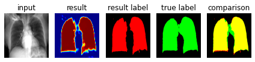
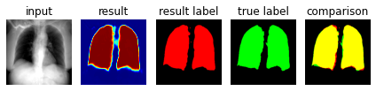
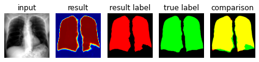
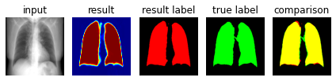
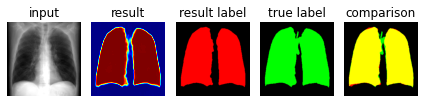
[13]:
df_score = pd.DataFrame(scores,
columns=['dice coefficient', 'jaccard index'],
index=test_index)
display(df_score.head())
display(
pd.DataFrame({
'median': df_score.median(),
'mean': df_score.mean(),
'std': df_score.std(),
'min': df_score.min(),
'max': df_score.max(),
}))
| dice coefficient | jaccard index | |
|---|---|---|
| 8 | 0.967223 | 0.936527 |
| 9 | 0.950637 | 0.905919 |
| 10 | 0.983885 | 0.968281 |
| 21 | 0.953997 | 0.912040 |
| 26 | 0.980320 | 0.961400 |
| median | mean | std | min | max | |
|---|---|---|---|---|---|
| dice coefficient | 0.957612 | 0.953377 | 0.018766 | 0.894611 | 0.983885 |
| jaccard index | 0.918671 | 0.911498 | 0.033521 | 0.809317 | 0.968281 |
分布の確認¶
Dice similarity coefficientの分布を表示する。
Boxplot¶
[15]:
sns.boxplot(x='dice coefficient', data=df_score)
sns.swarmplot(x='dice coefficient', data=df_score, color='.2')
plt.show()
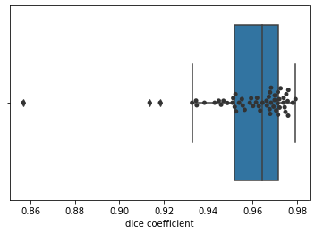
Letter value plot¶
[16]:
sns.boxenplot(x='dice coefficient', data=df_score)
sns.swarmplot(x='dice coefficient',
data=df_score,
color='white',
edgecolor='black',
linewidth=1)
plt.show()
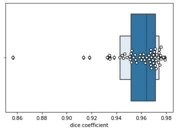
Violinplot¶
[17]:
sns.violinplot(x='dice coefficient', data=df_score, inner=None)
sns.swarmplot(x='dice coefficient',
data=df_score,
color='white',
edgecolor='gray')
plt.show()
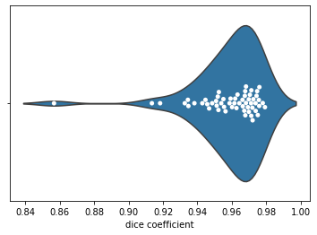